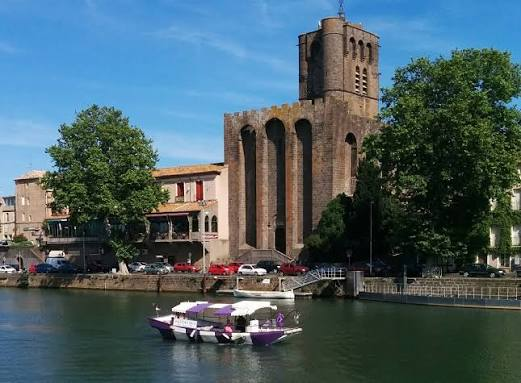

Saint-Étienne
d'Agde


⟹ Édifices religieux ⟸
Un très ancien siège chrétien. L'histoire de Saint-Étienne est indissociable de celle d'Agde, cité d'origine grecque devenue romaine puis siège épiscopal de l'Antiquité tardive. La présence chrétienne est solidement attestée au début du VIe siècle. En 506, Agde accueille un important concile des évêques du royaume wisigothique, présidé par Césaire d'Arles. Cette assemblée adopte une série de canons disciplinaires qui font du concile d'Agde un jalon majeur de l'histoire de l'Église en Gaule.
Des édifices antérieurs sous et autour de la cathédrale. Le sanctuaire médiéval s'inscrit dans un secteur occupé depuis l'Antiquité. Les traditions locales ont longtemps évoqué la succession d'un sanctuaire antique puis d'une première église chrétienne ; les recherches archéologiques ont surtout confirmé l'ancienneté de l'occupation religieuse et funéraire. Des sépultures de l'Antiquité tardive et du haut Moyen Âge ainsi que des vestiges d'états antérieurs témoignent de la continuité du site bien avant la construction romane visible aujourd'hui.

Le haut Moyen Âge et la continuité épiscopale. Après la période wisigothique, Agde traverse les bouleversements qui touchent la Septimanie puis son intégration au monde franc. La tradition du siège épiscopal se maintient au cours du Moyen Âge. Un édifice carolingien est généralement associé au site à partir de la fin du IXe siècle, avant les grandes transformations romanes des siècles suivants.
Le grand chantier roman du XIIe siècle. L'ancienne cathédrale actuelle appartient pour l'essentiel au XIIe siècle. La date de 1173 est traditionnellement associée à une importante campagne de construction et de fortification sous l'épiscopat de Guillaume. Le choix du basalte local, extrait des coulées volcaniques du secteur du Mont Saint-Loup, donne à l'édifice sa couleur presque noire et sa puissance visuelle exceptionnelle.
Une cathédrale-forteresse. Saint-Étienne est conçue dans un contexte où l'église épiscopale doit aussi participer à la défense de la cité. Ses murs très épais, ses volumes compacts, ses dispositifs de défense et son imposant clocher-donjon d'environ 35 mètres lui donnent l'apparence d'une forteresse. Cette architecture militaire et religieuse mêlée est l'un des traits les plus remarquables du monument et explique le surnom moderne de « perle noire » souvent donné à l'ancienne cathédrale.
La pierre volcanique n'est pas seulement un choix esthétique : elle appartient à l'identité même d'Agde. Employée dans de nombreux bâtiments du centre ancien, elle relie la cathédrale au paysage géologique local. La masse sombre de Saint-Étienne, dressée au bord de l'Hérault, constituait aussi un repère majeur pour les voyageurs arrivant par le fleuve et les voies terrestres.
Le cœur du diocèse d'Agde. Pendant des siècles, la cathédrale est le siège de l'évêque et du chapitre. Autour d'elle s'organisent la vie liturgique, l'administration du diocèse, les cérémonies publiques et une partie de la vie politique de la cité. Le diocèse, de dimensions modestes, n'en possède pas moins une histoire très longue : la tradition épiscopale agathoise s'étend de l'Antiquité tardive jusqu'à la Révolution française.
Transformations et embellissements de l'époque moderne. Comme beaucoup de cathédrales médiévales, Saint-Étienne n'est pas restée figée dans son état roman. Chapelles, mobilier, autels et décors sont modifiés au fil des siècles. Les XVIIe et XVIIIe siècles introduisent notamment un mobilier conforme aux nouveaux usages liturgiques et au goût baroque puis classique, créant un contraste avec l'austérité des puissantes maçonneries de basalte.
1790 : la disparition de l'évêché. La Révolution française met fin au diocèse d'Agde lors de la réorganisation de la carte ecclésiastique. Saint-Étienne perd son rang de cathédrale. Le dernier évêque d'Agde, Charles-François de Rouvroy de Saint-Simon de Vermandois, est arrêté pendant la Terreur et exécuté à Paris en 1794. Le Concordat de 1801-1802 ne rétablit pas le diocèse, dont le territoire est intégré au diocèse de Montpellier.
La naissance d'un monument patrimonial. Malgré la perte de son statut épiscopal, l'édifice conserve une valeur historique exceptionnelle. L'ancienne cathédrale Saint-Étienne est classée Monument historique dès 1840, au moment des premières grandes campagnes nationales de sauvegarde du patrimoine médiéval. Cette reconnaissance précoce témoigne de l'intérêt porté à son architecture romane fortifiée, très singulière dans le Midi.
Archéologie et redécouverte du passé. Les recherches menées autour et sous l'édifice ont permis de mieux comprendre les occupations antérieures du site. Elles rappellent que la cathédrale visible aujourd'hui n'est que le dernier grand état d'un lieu religieux beaucoup plus ancien, lié à l'histoire chrétienne d'Agde depuis l'Antiquité tardive. Le monument rassemble ainsi plusieurs strates de mémoire : cité grecque et romaine, évêché paléochrétien, ville médiévale fortifiée et patrimoine contemporain.
À Saint-Étienne, le basalte volcanique donne une forme monumentale à près de quinze siècles de mémoire chrétienne agathoise.
De l'évêché antique à l'ancienne cathédraleLa « perle noire de l'Hérault » : ce surnom vient tout entier du basalte du Mont Saint-Loup, un volcan éteint qui a aussi fourni la pierre d'une bonne partie du vieux centre d'Agde, donnant à la ville sa teinte si particulière.
Une orientation atypique : contrairement à la plupart des églises, celle-ci n'est pas orientée est-ouest ; elle a dû s'adapter au parcellaire de la ville antique, tracé perpendiculairement aux berges de l'Hérault.
72 évêques en treize siècles : de 506 à 1790, ils se sont succédé à la tête du diocèse d'Agde, depuis Sophronius, premier évêque mentionné avec certitude, jusqu'au dernier, guillotiné sous la Terreur.
Sous le sol de l'église : des fouilles menées en 1987 ont mis au jour des sépultures des Ve et VIe siècles ainsi que les fondations de l'édifice primitif, dont l'axe différait de celui de la cathédrale actuelle.
Adresse rue Louis-Bages, 34300 Agde, dans le centre ancien sur la rive de l'Hérault.
Ouverture accès cultuel généralement libre lorsqu'elle est ouverte ; les horaires pouvant varier selon la saison et les offices, vérifier localement avant une visite dédiée.
Accès en plein centre historique d'Agde, à pied, entouré de commerces et restaurants ; à environ 10 minutes du Cap d'Agde.
À proximité les autres églises agathoises, Saint-André et Saint-Sever, complètent la découverte du patrimoine religieux de la ville.
Protection et propriété. L’ancienne cathédrale Saint-Étienne est classée Monument historique depuis la liste de 1840, l’une des premières grandes listes françaises de monuments protégés. Elle appartient à la commune d’Agde et figure dans la base Mérimée sous la référence PA00103340.
Chronologie architecturale. Le ministère de la Culture situe la campagne principale au XIIe siècle. Un édifice carolingien avait précédé la cathédrale actuelle ; la reconstruction et la fortification sont engagées dans la seconde moitié du XIIe siècle. Le clocher est ajouté puis surélevé au XIVe siècle et la cathédrale est consacrée en 1453.
Une architecture véritablement militaire. Le dossier d’Inventaire régional décrit un vaisseau unique couvert d’un berceau brisé, un chevet plat et un plan en tau. Mâchicoulis entre les contreforts, parapet crénelé, tours sur les bras du transept et clocher-donjon témoignent d’une fonction défensive réelle, accentuée par l’austérité du basalte local.
Le grand bouleversement de 1629. Après les conflits religieux, l’évêque Balthazar de Budos fait restaurer l’édifice et inverse la disposition intérieure : une porte est créée dans le chevet et le sanctuaire est déplacé vers l’ouest. Cette transformation explique en partie l’organisation inhabituelle que l’on perçoit aujourd’hui.
Le maître-autel et son retable. Le retable monumental de la fin du XVIIe siècle est financé par le legs d’Antoine Marthelly. Quatre colonnes de marbre incarnat et blanc sont commandées aux carrières de Caunes en 1690. Le décor comprend notamment les figures de saint Étienne et de saint Laurent.
La chaire. La chaire à prêcher en marbre, installée sur le mur nord de la nef, est traditionnellement datée de 1751. Elle constitue l’un des principaux apports décoratifs de l’époque moderne dans un intérieur dominé par les volumes romans.
Vitraux. L’Inventaire général recense notamment des verrières représentant l’Annonciation, le Sacré-Cœur et Marguerite-Marie Alacoque, la lapidation de saint Étienne, saint Martin ainsi que des saints et martyrs liés au territoire agathois. Certaines baies sont datées de 1900.
Adresse patrimoniale. Les bases officielles situent l’édifice rue Louis-Bages, 34300 Agde, au bord de l’Hérault, dans le centre ancien. Les horaires d’ouverture cultuelle pouvant varier, il est prudent de vérifier localement avant une visite spécifiquement consacrée à l’intérieur.
Sources et liens officiels :
Ministère de la Culture — notice Mérimée PA00103340 ↗
Région Occitanie — Inventaire de l’ancienne cathédrale ↗
Région Occitanie — maître-autel et retable ↗
Région Occitanie — chaire à prêcher ↗
Région Occitanie — verrières de Saint-Étienne ↗